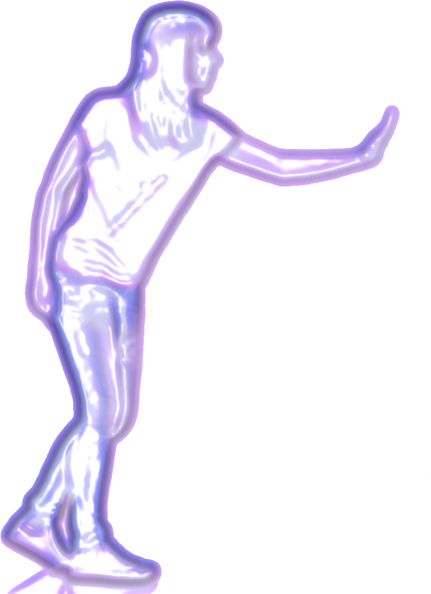
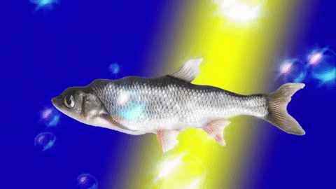

To assume responsibility for a future is not to know its direction fully in advance, since the future, especially the future with and for others, requires a certain openness and unknowingness; it implies becoming part of a process the outcome of which no one subject can surely predict.
Judith Butler, <Undoing Gender>
Alas! those who were shocked at my making love that way to a man are now shocked at my making love to a machine; you can’t win."
Joanna Russ, <The Female Man>


